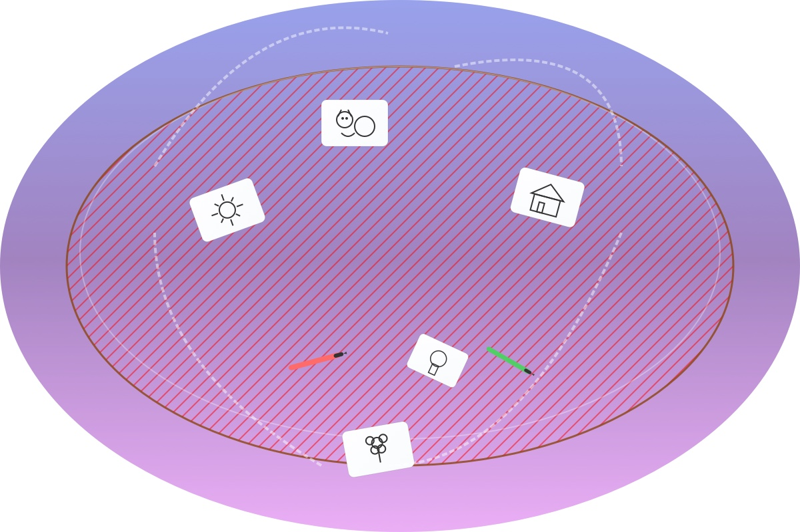
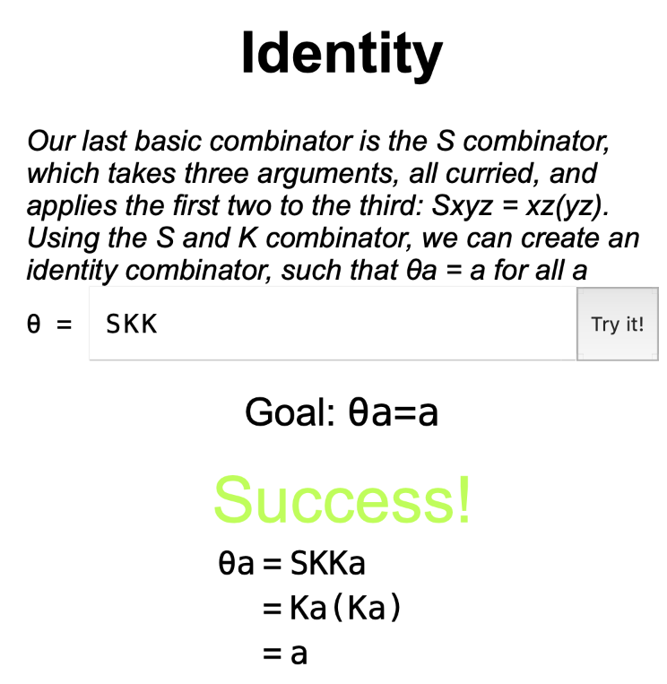
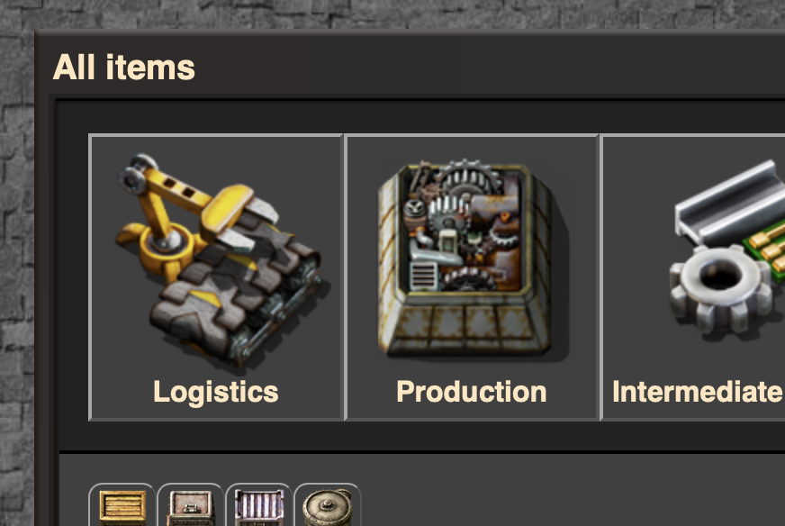
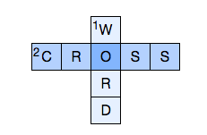
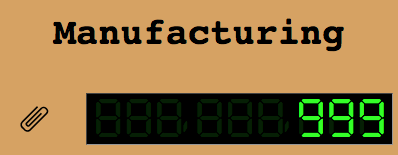

Pass the Pic

A game we used to play in person involving drawing pictures and
describing them. During COVID lockdowns I created an online version of
this, which we then continued to use online because a lot of us live
in different places around the country. I recently updated it to use
React, and also made the design mobile-friendly and prettier (with lots of help from Claude).
The game is available at passthepic.com. The
source code is on GitHub.
Untitled combinators game

Inspired by the game Euclidea and
the book To
Mock a Mockingbird, I wrote the beginnings of a game about
combinators. Players solve riddles such as divising the I combinator from
S and K. The source code is on GitHub.
There are only a few levels at the moment and the game definitely lacks
polish, but I am nonetheless proud of it and think it's cool.
Factorio item viewer

I was watching a YouTube video about Factorio Space Exploration, and I
wanted to be able to see the tech tree. This evolved into extracting all
the item icons, recipes and even some animations. The backend (icon and
animation extraction) is written in Python with a tiny bit of Lua glue
code. The front end is React. The source code is on GitHub.
Brier town homepage
As part of my DesignLab course, I
reimagined the homepage for my
town with a more modern look. I have made available a wireframe, some intermediate versions, and
the final design. I have also rendered
the front page in HTML.
{kind=link}
{kind=link}
{kind=link}
{kind=link}
Collaborative crossword app

I made this app to help my family solve crosswords collaboratively across
multiple timezones. Since there is only one user (myself) who creates
crosswords, the create workflow is
not as nice as it could be. The solving
page is used by multiple people (where "multiple" is defined as
"five"), so it is somewhat nicer. The source code is on GitHub.
I wrote every line of code myself, but Claude
helped with the design.
Universal Paperclips in Elm

After wasting a weekend on Universal
Paperclips, and in my Elm-fueled frenzy, I decided to write a clone in
Elm. The source code is on GitHub.
Bricks puzzle solver

As an exercise in functional programming, I wrote a solver for Brickscape. The UI is written in
Elm and compiled to JavaScript. The server, including the solver, is
written in Haskell. The source code is on GitHub. It doesn't
look nice because the main aim was to write a decent solver in Haskell,
not the UI.